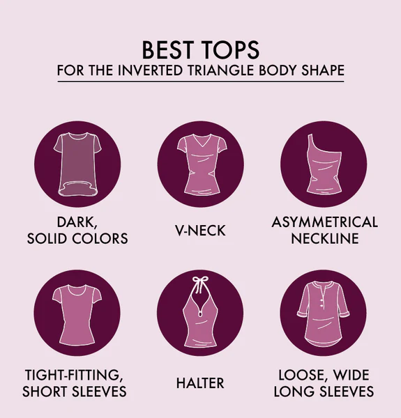
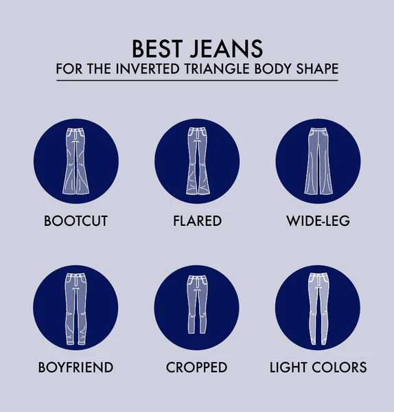
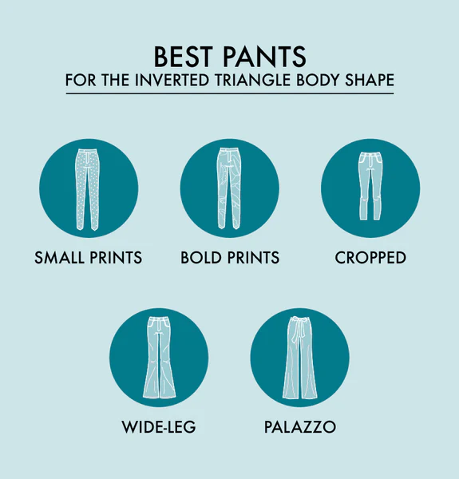
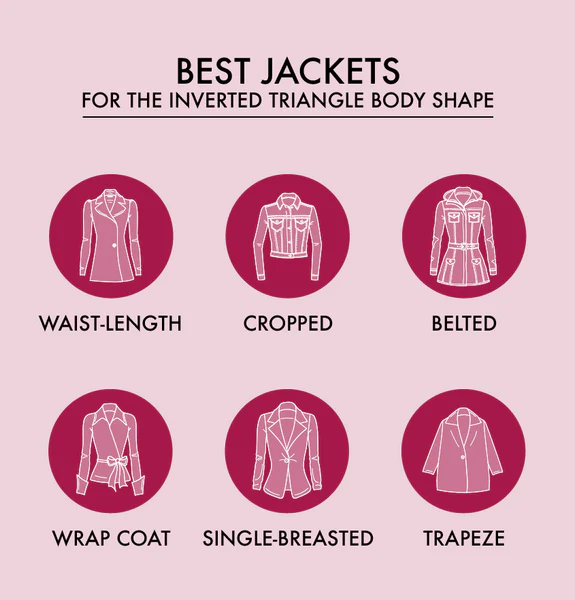
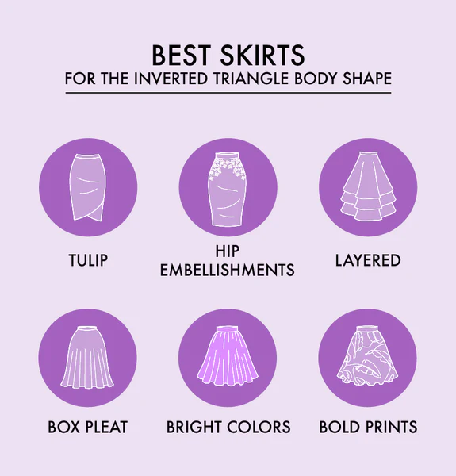
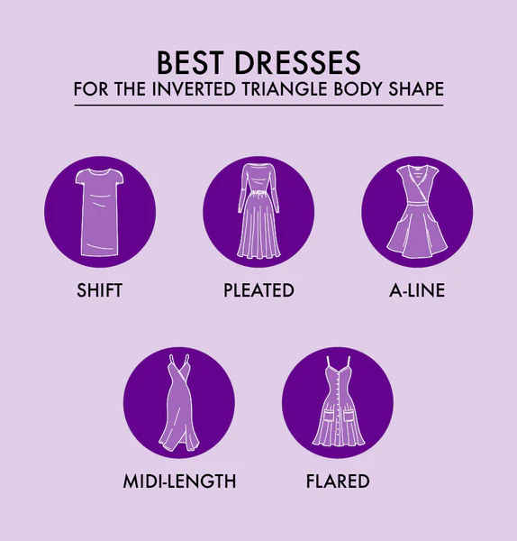
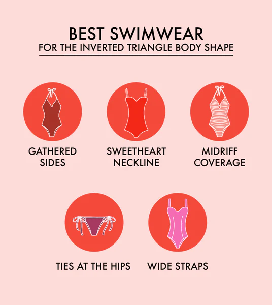

TOPS
Tops for inverted triangle body shapes should be simple without a lot of detail to draw the eye down to your waist and hips. The most flattering tops and blouses for inverted triangles include:
| Top Types | Style Describes |
|---|---|
| V-Neck | Narrowing your shoulders is the goal, so create this illusion by choosing a slimmer V-neck. |
| Dark, Solid Colors | Inverted triangle body shapes can choose dark, solid colors and neutral tones on the body's top half to downplay this area. |
| Asymmetric Necklines | An asymmetric top will break up the neckline and create a sense of balance. |
| Halter Tops | Halter tops will draw interested away from the shoulders and to the neckline. |
| Tight-Fitted Short Sleeves | When choosing short sleeve tops, pick fitted sleeves that keep the shoulders neutral. |
| Loose and Wide Long Sleeves | The opposite is true for long sleeves. Choose draping fabric like bell sleeves. |
JEANS
When shopping for women's jeans for your inverted triangle body shape, consider these tips.
| Jean Types | Style Describes |
|---|---|
| Bootcut | With the gentle curves of bootcut, you create an illusion of hips on an inverted triangle body shape. |
| Flare Leg | You would also look fabulous in more dramatic flare jeans, including wide bell bottoms. |
| Wide Leg | Wide, straight-leg jeans will also balance out your body shape to give you a fuller look on the bottom. |
| Boyfriend | These baggy jeans look great on your frame as they fill out your hips and give you a balanced shape. |
| Cropped | Cropped jeans, either just at the ankle or a Capri-length style, will also draw attention to your bottom half. |
| Light Colors | Inverted triangle body shapes can also look incredible in light denim or colorful jeans. |
PANTS
Choosing the best dress and casual pants for an everyday look or the office can be a fun way to express your personality. Here’s what to look for:
| Pant Types | Style Describes |
|---|---|
| Small Busy Prints | Micro prints in light colors will create detail on your legs, drawing the eye down. |
| Bold, Large Prints | You are a lucky person who can wear fun pants with bold, large prints. Choose florals or large plaids. |
| Cropped | Cropped pants with sandals in the summer or boots in the winter will focus on your bottom half. |
| Wide Leg | Wide leg pants will give you the illusion of a waist and hips. |
| Palazzo Pants | Flowy palazzo pants are on-trend and made for your body shape. |
JACKETS
When the temperatures drop, reach into your closet to grab these flattering jackets and coats.
| Jacket Types | Style Describes |
|---|---|
| Waist-Length | Choosing a jacket that comes right to your waist draws the eye down to your bottom half. |
| Cropped | Similarly, a cropped jacket will also draw attention to your waistline. |
| Belted | Choose belted jackets or coats that cinch at the waist to give the illusion of hips. |
| Wrap Coat | Wrap coats that draw attention to the middle are a great accessory for an inverted triangle-shaped body. |
| Single-Breasted | Choose a single-breasted coat with a small collar and no shoulder details. |
| Trapeze | A trapeze coat has no waistline or an empire waist, and the draping fabric draws attention downward. |
SKIRTS
Like dresses, you also want the best skirts in your wardrobe to show off your inverted triangle body shape.
| Skirt Types | Style Describes |
|---|---|
| Tulip | Tulip skirts have an accented waist and a tapering hemline which can draw the proper attention to your hips and butt. |
| Box Pleat | Large pleats at the waist, known as box pleats, give your waist and hip area visual interest. |
| Layered | Your inverted triangle shape body is perfect for showcasing layered skirts. |
| Hip Embellishments | Choose skirts with decorations at the hips, such as buttons. |
| Bright Colors | Bright, bold colors are great for your bottom half to draw the eye down. |
| Bold Patterns | Choose a bold, large print such as florals to create visual interest on your bottom half. |
DRESS
Show off your legs with these stylish dresses that are perfect for your inverted triangle body shape.
| Dress Types | Style Describes |
|---|---|
| Shift | A shift dress is a simple, draping dress that hangs down from the shoulders. It can give you the illusion of volume around the hips and butt. |
| Pleated | Pleats also give fullness and are great to consider for inverted triangle body shapes. |
| A-Line | The classic A-line looks excellent on your body. Choose a fuller skirt to give you volume on your lower half. |
| Midi-Length | Midi-length dresses are fabulous for you as they fall mid-calf, which will draw your body's line downward. |
| Flared Hem | Straight-shaped dresses with a flared hem will show off your thighs, creating a curvier lower half. |
SWIMWEAR
Your swimwear should give you confidence and make you feel like a goddess, whether you’re at the beach, lake, or pool. Here are a few great choices for inverted triangle swimsuits.
| Dress Types | Style Describes |
|---|---|
| Ties at the Hips | Bikini bottoms that tie at the hips add visual interest. |
| Sweetheart Neckline | A sweetheart neckline accents your bust without drawing attention to your upper half. |
| Wide Straps | Choose wide straps to balance out your shoulders. |
| Gathered Sides | Gathers, ruching, or shirring on the sides and torso of a swimsuit will create interest and a waistline. |
| Tankinis | Tankinis with fit and flare tops, like peplum tops, will accentuate all your right curves. |
| Midriff Coverage | Choose swimsuits that accentuate your torso by covering the midriff. Tankinis are a great choice. |
SHOES AND ACCESSORIES
Shoes and accessories in the right places will create curves and draw the eye where you want it to go. Here are a few accessory options for all occasions.

| Shoe and Accessor Types | Style Describes |
|---|---|
| Hip Bags | The elevated relative of the fanny pack, hip bags are making a comeback and can add visual interest to your waist and hips. |
| Bracelets | Draw the eye down by accessorizing your wrists with bold bangles and statement bracelets. |
| Long Necklaces | A long necklace with a large pendant will help elongate your body. |
| Statement Shoes | Choose bold shoes with prints and pointed toes to lengthen your legs. |